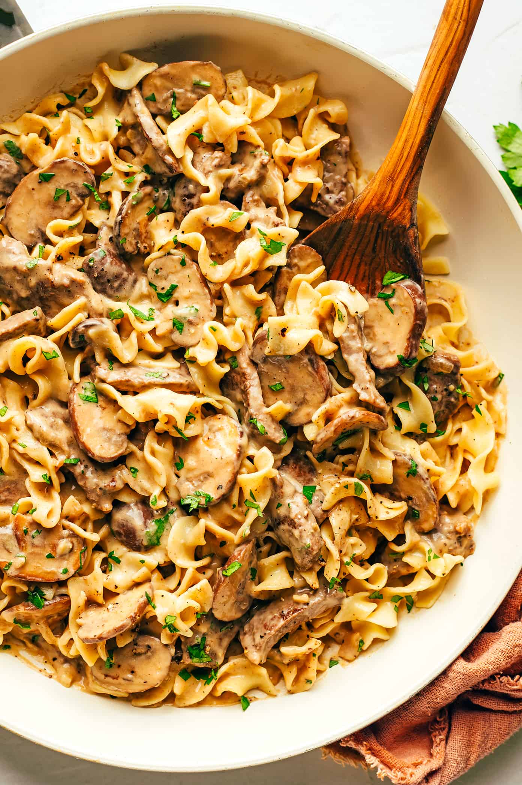

Alaska's Pasta
Alaska's Pasta

Description
Beef Stroganoff is a classic and hearty Russian dish known for its rich and flavorful combination of tender beef strips, onions, and mushrooms in a creamy sauce. The dish's origins date back to the 19th century, and it is named after the influential Stroganov family of Russia. The preparation typically involves thinly sliced beef sautéed until browned, then simmered in a velvety sauce made with sour cream, mustard, and sometimes white wine or broth. Mushrooms and onions are often added to enhance the complexity of flavors, contributing a delightful earthiness to the dish. The result is a comforting and indulgent meal that is often served over egg noodles, rice, or mashed potatoes, making it a beloved and timeless comfort food enjoyed by people around the world.
The versatility of beef stroganoff allows for variations in ingredients and preparation methods, with regional adaptations reflecting local culinary influences. Some recipes incorporate additional elements like garlic, paprika, or herbs, providing a personalized touch to this classic dish. Regardless of the specific recipe, the hallmark of beef stroganoff is its luscious and creamy sauce that coats the tender beef, creating a harmonious blend of textures and flavors that make it a perennial favorite in households and restaurants alike.
Ingredients
- 1.5 pounds (about 700g) beef sirloin or tenderloin, thinly sliced into strips
- 2 tablespoons olive oil
- 1 large onion, thinly sliced
- 8 ounces (about 225g) mushrooms, sliced
- 2 cloves garlic, minced
- 2 tablespoons all-purpose flour
- 1 cup (240ml) beef broth
- 2 tablespoons Dijon mustard
- 2 tablespoons Worcestershire sauce
- 1 cup (240ml) sour cream
- Salt and pepper, to taste
- Chopped fresh parsley, for garnish
- Cooked egg noodles, rice, or mashed potatoes, for serving
Steps
- In a large skillet or frying pan, heat the olive oil over medium-high heat. Add the sliced beef and cook until browned on all sides. Remove the beef from the skillet and set it aside.
- In the same skillet, add a bit more oil if needed, then add the sliced onions and mushrooms. Sauté until the vegetables are softened.
- Add the minced garlic to the skillet and cook for about 1 minute until fragrant.
- Sprinkle the flour over the vegetables and stir well to combine. Cook for another 1-2 minutes to remove the raw taste of the flour.
- Gradually pour in the beef broth, stirring constantly to avoid lumps. Add the Dijon mustard and Worcestershire sauce. Bring the mixture to a simmer and let it cook until it thickens.
- Reduce the heat to low, and return the cooked beef to the skillet. Allow it to simmer for a few more minutes until the beef is heated through and fully coated with the sauce.
- Stir in the sour cream and season with salt and pepper to taste. Cook for an additional 2-3 minutes, making sure not to boil the sour cream.
- Serve the Beef Stroganoff over cooked egg noodles, rice, or mashed potatoes. Garnish with chopped fresh parsley for added flavor and a pop of color.